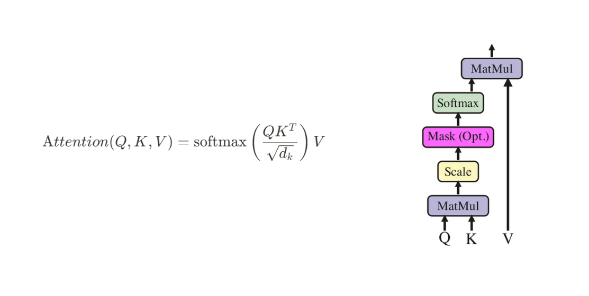

LMs are trained to predict the next word based on the context of the previous words. However, to make accurate predictions, LMs need to understand the relationship between words in the sentence. This is the objective of attention mechanism — it helps the LM to focus on the most relevant words to that context to make predictions. !
In this post, we’ll implement scaled dot-product attention in a simple way. Back in the day, RNNs were the standard for sequence-to-sequence tasks, but everything changed when attention mechanisms came into the picture. Then, the groundbreaking paper “Attention Is All You Need” shook things up even more, showing that RNNs weren’t necessary at all—attention alone could handle it. Since then, attention has become the backbone of modern architectures like Transformers.
Embeddings representing the Words as vectors
Initially the words are converted into tokens, Here we assume tokens are equal to index.
import torch
torch.manual_seed(42) # Set seed for reproducibility
embedding_dim = 3
words = ['the', 'cat', 'sat', 'on', 'mat']
embeddings = [torch.rand(embedding_dim) for word in words]
Output for this code is :
[tensor([0.8823, 0.9150, 0.3829]),
tensor([0.9593, 0.3904, 0.6009]),
tensor([0.2566, 0.7936, 0.9408]),
tensor([0.1332, 0.9346, 0.5936]),
tensor([0.8694, 0.5677, 0.7411])]
Here the corresponding Embeddings for each word is initialized randomly. Here we represented each word as 3 dimensional embedding.
{'the': tensor([0.8823, 0.9150, 0.3829]),
'cat': tensor([0.9593, 0.3904, 0.6009]),
'sat': tensor([0.2566, 0.7936, 0.9408]),
'on': tensor([0.1332, 0.9346, 0.5936]),
'mat': tensor([0.8694, 0.5677, 0.7411])}
Attention Mechanism
Attention Mechanism is inspired by how humans focus on specific parts of information when processing it—just like when we read a sentence, we don’t focus on every word equally. Instead, we “attend” to the most relevant words that help us understand the meaning.
Lets take an example for understanding attention mechanism:
Imagine reading the sentence: “The cat sat on the mat.”
If asked, “Where is the cat?”, attention would primarily focus on the word “cat” and the word “mat”. Other words like “the” or “on” are ignored since they don’t carry much relevance to the question.
Lets take a sentence:
I am going to cinema to watch ………?
The most probable answers would be “movie,” “action movie,” or something similar. Words like “book” or “cat” don’t fit the context and are irrelevant to predicting the correct word. The key to predicting the correct word is in the context and information provided in the preceding words. To make accurate predictions, we need to understand the relationship between words in the sentence. This is the objective of attention mechanism — it helps the model to focus on the most relevant words to that context to make predictions.
Understanding Scaled Dot-Product Attention
The paper Attention Is All You Need introduced Scaled Dot-Product Attention .

Lets first calculate the Similarity between Query and Key
This is done as
Q = K = V = embeddings
similarity_matrix=torch.matmul(Q,K.T)

In our case the dimension of output is 5*5.
Similarity Matrix:
tensor([[1.7622, 1.4337, 1.3127, 1.1999, 1.5702],
[1.4337, 1.4338, 1.1213, 0.8494, 1.5010],
[1.3127, 1.1213, 1.5807, 1.3343, 1.3708],
[1.1999, 0.8494, 1.3343, 1.2435, 1.0863],
[1.5702, 1.5010, 1.3708, 1.0863, 1.6274]])
Here’s each value represents the similarity between words as described below.
| the | cat | sat | on | mat | |
|---|---|---|---|---|---|
| the | the-the | the-cat | the-sat | the-on | the-mat |
| cat | cat-the | cat-cat | cat-sat | cat-on | cat-mat |
| sat | sat-the | sat-cat | sat-sat | sat-on | sat-mat |
| on | on-the | on-cat | on-sat | on-on | on-mat |
| mat | mat-the | mat-cat | mat-sat | mat-on | mat-mat |
The similarity matrix captures the similarities between the query and key vectors. Higher similarity means the model should focus more on that word when making predictions, while lower similarity means the word is less relevant.
Scaling the compatibility matrix
In the second step, we scale the dot-product of the query and key vectors by a factor of,
$$ \frac{1}{d_k} $$ . In our case We’ve only taken dimension of 3.
However, when the dimension d is very large, dot-product attention without this scaling factor performs poorly. The authors of the paper “Attention Is All You Need” attribute this poor performance to having large variance.
As d_k increases, the variance of the dot product also becomes larger, leading to some values becoming extremely small after being passed through the softmax function. This causes issues during gradient calculation, similar to the vanishing gradient problem, where the gradients become too small to effectively update the model. To mitigate this, the dot product is scaled by $$ \sqrt{\frac{1}{d_k}} $$
before applying softmax , which stabilizes the training process and improves performance.
To visualize this effect lets take output from softmax before and after scaling for embedding dimension of 256.

Applying Softmax Activation
The softmax function is used to convert the logits into probabilities. It takes a vector of raw scores (logits) and transforms them into a probability distribution. The softmax function is defined as:
$$ \text{softmax}(x) = \frac{e^{x_i}}{\sum_j e^{x_j}} $$

Softmax is applied pointwise, so it doesn’t change the dimension of the input vector.
import torch.nn.functional as F
similarity_matrix_scaled=similarity_matrix/(1/torch.sqrt(torch.tensor(3)))
softmax_similarity_matrix_scaled = F.softmax(similarity_matrix_scaled, dim=1)
softmax_similarity_matrix_scaled
Its output is:
tensor([[0.2372, 0.1962, 0.1830, 0.1714, 0.2123],
[0.2179, 0.2180, 0.1820, 0.1555, 0.2266],
[0.1957, 0.1752, 0.2285, 0.1982, 0.2024],
[0.2058, 0.1681, 0.2224, 0.2110, 0.1927],
[0.2154, 0.2070, 0.1920, 0.1629, 0.2227]])
It can be visualized in Heatmap as

Computing the Context Vector as final output.
So for final step We multiply the attention matrix from previous step and multiply it with the Value matrix V. The final product gives the new context vector for all the words in vocabulary in our case 5.
new_context=torch.matmul(softmax_similarity_matrix_scaled,V)
new_context
Output:
tensor([[0.6518, 0.7195, 0.6399],
[0.6658, 0.7029, 0.6459],
[0.6018, 0.7289, 0.6628],
[0.5955, 0.7371, 0.6571],
[0.6532, 0.7090, 0.6492]])

Conclusion
In this section, we saw how contextual embeddings are generated using self-attention. We also discussed the importance of scaling and how to implement a simple self-attention block. Notably, there were no trainable parameters involved here, and we treated the Query (Q), Key (K), and Value (V) matrices as all being the same.
However, to make the attention block trainable, we need to introduce learnable weights when deriving the Q, K, and V vectors from the original embedding. These weights will allow the model to adjust and fine-tune the attention mechanism during training. In the next section, we’ll explore how to implement this by adding trainable parameters to the attention block
Attention Mechanism with trainable Parameters
Alright! Now that we understand how self-attention is calculated, let’s take it a step further by introducing trainable parameters so that the model can learn how to find the context of words effectively.
Adding Trainable Parameters to Self-Attention
Q (Query), K (Key), and V (Value) matrices are not just direct copies of word embeddings. Instead, they are learned transformations of these embeddings.
To achieve this, we introduce three trainable weight matrices:
- W_q (Query weight matrix): Learns how to project word embeddings into the query space.
- W_k (Key weight matrix): Learns how to project word embeddings into the key space.
- W_v (Value weight matrix): Learns how to project word embeddings into the value space.
Each of these matrices will be optimized during training.
W_q=torch.randn(embedding_dim,embedding_dim)
W_v=torch.randn(embedding_dim,embedding_dim
W_k=torch.randn(embedding_dim,embedding_dim)
Note that the dimension of these matrix can be made different. However the first dimension must be equal to embedding dimension to satisfy the matrix multiplication condition. Changing the second dimension implies projecting the embedding dimension from one dimension to other .
Lets get the new Query, Key and Value vector.
Q = torch.matmul(embeddings, W_q) # (5, 3)
K = torch.matmul(embeddings, W_k) # (5, 3)
V = torch.matmul(embeddings, W_v) # (5, 3)
Then we calculate the self attention similar to how we did above.
similarity_matrix = torch.matmul(Q, K.T) # (5, 5)
similarity_matrix_scaled = similarity_matrix / torch.sqrt(torch.tensor(embedding_dim, dtype=torch.float32))
softmax_similarity_matrix_scaled = F.softmax(similarity_matrix_scaled, dim=1)
new_context = torch.matmul(softmax_similarity_matrix_scaled, V)

This is what the final flow looks like.
Here Lets wrap up this in Class Based Implementation
import torch
import torch.nn.functional as F
class SelfAttention:
def __init__(self, embedding_dim):
torch.manual_seed(42)
self.embedding_dim = embedding_dim
# Initialize weight matrices
self.W_q = torch.randn(embedding_dim, embedding_dim)
self.W_k = torch.randn(embedding_dim, embedding_dim)
self.W_v = torch.randn(embedding_dim, embedding_dim)
def forward(self, embeddings):
# Compute Query, Key, and Value matrices
Q = torch.matmul(embeddings, self.W_q)
K = torch.matmul(embeddings, self.W_k)
V = torch.matmul(embeddings, self.W_v)
# Compute similarity (dot product attention)
similarity_matrix = torch.matmul(Q, K.T) # (num_words, num_words)
# Scale by sqrt(embedding_dim)
similarity_matrix_scaled = similarity_matrix / torch.sqrt(
torch.tensor(self.embedding_dim, dtype=torch.float32)
)
# Apply softmax to get attention weights
attention_weights = F.softmax(similarity_matrix_scaled, dim=1)
new_context = torch.matmul(attention_weights, V)
return new_context, attention_weights
embedding_dim = 3
words = ['the', 'cat', 'sat', 'on', 'mat']
# Generate random embeddings for words
embeddings = torch.stack([torch.rand(embedding_dim) for _ in words])
# Initialize attention mechanism
self_attention = SelfAttention(embedding_dim)
# Forward pass to compute attention
new_context, attention_weights = self_attention.forward(embeddings)
print("New Context Vectors:\n", new_context)
print("\nAttention Weights:\n", attention_weights)
Output:
New Context Vectors:
tensor([[ 0.3689, -0.4890, 1.3677],
[ 0.2569, -0.4673, 1.3297],
[ 0.3284, -0.4752, 1.3515],
[ 0.1971, -0.4685, 1.3124],
[ 0.3061, -0.4846, 1.3491]])
Attention Weights:
tensor([[0.4672, 0.0538, 0.0879, 0.0829, 0.3082],
[0.3362, 0.1266, 0.1921, 0.1077, 0.2375],
[0.4212, 0.0851, 0.1492, 0.0815, 0.2631],
[0.2728, 0.1547, 0.1886, 0.1526, 0.2314],
[0.3922, 0.0832, 0.1179, 0.1143, 0.2923]])
So this ends up this blog. Congratulations on making it to the end. Feel free to experiment with different dimensions and input data to see how the self-attention mechanism adapts and scales.
References
Implementing Self-Attention from Scratch in PyTorch | by Mohd Faraaz | Medium
Understanding and Coding the Self-Attention Mechanism of Large Language Models From Scratch
Self Attention in Transformers | Deep Learning | Simple Explanation with Code!